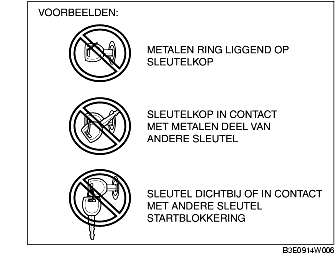

VOORWOORD [STARTBLOKKERING]
B3E090201077W01
• Als het contact vanuit stand LOCK (ACC) in stand ON (START) wordt gezet, wordt automatisch een zelfdiagnose uitgevoerd.
• Als de storingzoekprocedure een storing oplevert, geeft het waarschuwingslampje antidiefstalsysteem een storingscode aan en slaat de PCM de storingscode op. Storingscodes opgeslagen in de PCM kunnen worden gecontroleerd met behulp van de WDS of een vergelijkbare tester.
• De storingscodes van de startblokkering worden opgeslagen in de PCM. De storingscodes worden gewist als het contact vanuit stand ON in stand LOCK (ACC) wordt gezet.
• Sommige storingscodes kunnen alleen met het WDS of een vergelijkbare tester worden uitgelezen en niet met het waarschuwingslampje antidiefstalsysteem.
• De PID/DATA-functie kan worden gebruikt om voor een bepaalde auto de geregistreerde sleutels te controleren.
• Raadpleeg het volgende storingzoekschema als de motor niet start terwijl er geen storingscodes worden weergegeven:
-
- NR. 3: WIL NIET AANSLAAN [ZJ, Z6]
-
- NR. 3: WIL NIET AANSLAAN [LF]
-
Opmerking
-
• Gebruik altijd de WDS of een vergelijkbare tester om storingscodes te controleren, zelfs als de storingscodes worden gecontroleerd door het waarschuwingslampje antidiefstalsysteem. Als er een storing in het circuit van het waarschuwingslampje is, worden de storingscodes mogelijk niet goed weergegeven.
-
• Gebruik altijd de WDS of een vergelijkbare tester om storingscodes te controleren, omdat een aantal storingscodes niet kan worden gecontroleerd met behulp van het waarschuwingslampje antidiefstalsysteem.
-
• Als één van de volgende voorwerpen zich te dicht in de buurt van de sleutel bevindt, wordt de signaalcommunicatie tussen de sleutel en de auto negatief beïnvloed, waardoor de motor niet meer start. Start de motor niet als één van de volgende voorwerpen zich te dicht in de buurt van de sleutel bevinden.
-
- Metalen voorwerpen
-
- Reservesleutels of sleutels van andere auto's met startblokkering
-
- Elektronische apparaten en (bank)pasjes met een magneetstrip

-
Aanwijzing
-
• Als er meerdere storingscodes worden geregistreerd, geeft het waarschuwingslampje antidiefstalsysteem alleen de storingscode met het laagste nummer weer. De PCM slaat meerdere storingscodes tegelijkertijd op.
-
• Repareer bij twee of meer storingscodes eerst het circuit van de eerste storingscode. Zet na het verhelpen van de eerste storing het contact van stand LOCK naar ON en controleer dan de storingscodes opnieuw.